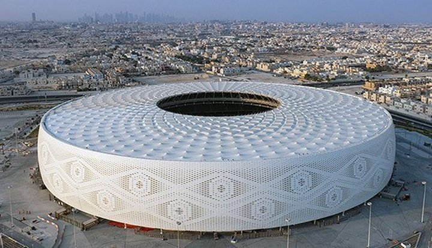
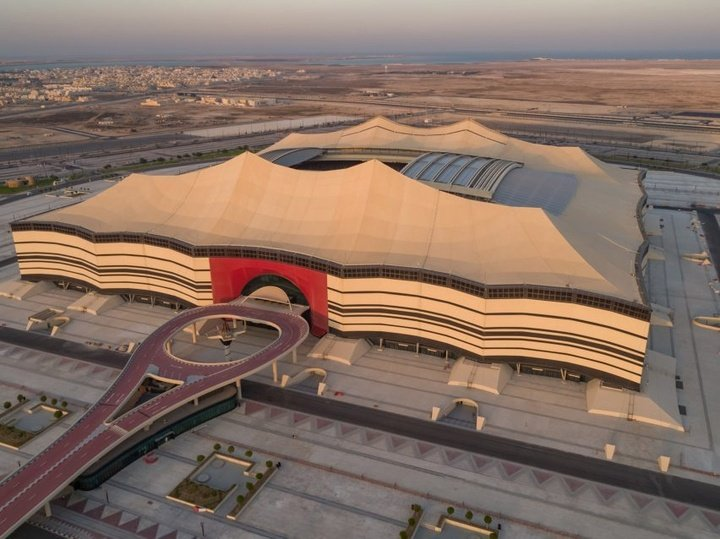

Estadio Al Thumama

• Al Thumama Stadium. Situado a 12 km al sur de Doha, el diseño del estadio Al Thumama entreteje la
cultura árabe a través de su fachada, inspirándose en los patrones tejidos de una Gahfiya, el tocado
tradicional que llevan los hombres musulmanes de la región árabe. Además de su diseño, el entorno
del
proyecto explora la importancia de la arquitectura ecológica y contextual, apuntando a la
certificación
de 4 estrellas del Global Sustainability Assessment System Trust (GSAS) tanto para el diseño como
para
la construcción. El estadio garantiza el ahorro de un 40% más de agua dulce en comparación con un
estadio convencional, utilizando agua reciclada para regar las zonas verdes. En el diseño se han
integrado 50.000 metros cuadrados de parque, utilizando árboles autóctonos para cubrir el 84% del
paisaje. El estadio se inauguró durante la 49ª final de la Copa Amir, el 22 de octubre de 2021.
Estadio Al-Janoub
El estadio Al Janoub originalmente se llamaba Al Wakrah, pero fue rebautizado el día de su
inauguración
en mayo del 2019. Está inspirado en las velas de los barcos tradicionales y con el objetivo de
destacar
las industrias locales. Cuenta con una capacidad para 40.000 espectadores. Tuvo un costo de 575
millones
de dólares y se necesitaron 10 millones de horas de trabajo para levantarlo desde cero. Posee un
sistema
de refrigeración debajo de los asientos que les permitirá a los espectadores disfrutar los partidos
con
24 grados aunque la temperatura externa sea de 36 ó 40. Incluso, también equipos de aire
acondicionado
en las fueras del estadio para aliviar a las personas que estén en el ingreso.
Estadio Al Bayt

El Al-Bayt Stadium fue elegido por los organizadores como el anfitrión del partido inaugural del
Mundial
de Qatar 2022. Con un llamativo diseño que se asemeja a una carpa árabe, la cancha tiene una
capacidad
para 60.000 espectadores. En las inmediaciones del estadio se encuentran atractivos parques con
lagunas
y un amplio estacionamiento que cuenta con más de 6.000 para autos. El diseño del Al Bayt minimizará
el
consumo de energía requerido para mantener frescos a los espectadores. Está previsto que los toldos
de
la estructura de tienda den sombra en la cancha para complementar el funcionamiento del aire
acondicionado.
Estadio Ahamd Bin Ali
Sede de uno de los equipos de fútbol más célebres de Qatar, en la ciudad de Al Rayyan, el estadio
Ahmad
bin Ali celebra su estrecha comunidad incorporando símbolos de la cultura y las tradiciones
qataríes.
Una de las principales características del diseño es la fachada ondulada, hecha con patrones que
caracterizan diferentes aspectos del país, como “la importancia de la familia, la belleza del
desierto,
la flora y la fauna autóctonas, así como el comercio local e internacional”. Tiene capacidad para
40.000
aficionados.
Estadio Educacion City
Situado en un vibrante centro de conocimiento e innovación, el Estadio de la Ciudad de la Educación
está
rodeado de instalaciones académicas y organizaciones deportivas. Debido a su particular ubicación en
la
Ciudad de la Educación, la estructura se ha diseñado cuidadosamente prestando gran atención a la
accesibilidad. Durante la construcción, las excavadoras descubrieron rocas que se remontan a 20-30
millones de años, lo que les obligó a excavar 17 metros más abajo, para que el campo pueda situarse
por
debajo del nivel del mar, donde las temperaturas son más frescas. El diseño se reveló en 2014, y se
completó y abrió al público en 2020.
Stadium 974
Considerado como uno de los diseños de estadios más innovadores de los ocho presentados, el Estadio
974,
antes conocido como Ras Abou Aboud, está inspirado en el comercio internacional y la navegación de
Qatar. El número “974” también es muy significativo para el proyecto, ya que es el código de
marcación
internacional de Qatar, así como el número de contenedores marítimos utilizados en su construcción.
La
estructura está situada en la orilla, frente al horizonte de la Bahía Oeste de Doha y tiene
capacidad
para 40.000 personas, se desmontará por completo una vez finalizada la Copa Mundial. El estadio fue
inaugurado el 20 de noviembre de 2021.
Estadio Khalifa International Stadium
Construido en 1976 en Al Rayyan, el Khalifa International Stadium es desde hace tiempo uno de los
estadios más notables, ya que ha albergado los Juegos Asiáticos, la Copa del Golfo Pérsico y la Copa
Asiática de la AFC, entre otros eventos. Para esta cita en particular, el estadio se ha ampliado
para
dar cabida a 40.000 aficionados y se ha equipado con una “innovadora tecnología de refrigeración”
que
permitirá a los jugadores competir en un entorno confortable. La ceremonia de reapertura del estadio
tuvo lugar en 2017.
Estadio Lusail
El estadio de Lusail, con capacidad para 80.000 espectadores, es la mayor de las ocho estructuras, y
acogerá la final de la Copa Mundial de la FIFA Qatar 2022. El diseño se inspira en el juego de luces
y
sombras de la linterna Fanar. La forma estructural y la fachada se hacen eco de los intrincados
motivos
de las piezas de arte y mobiliario encontradas en todo el mundo árabe e islámico durante las
primeras
civilizaciones. Debido a su prominente ubicación en Lusail, una metrópolis de reciente construcción,
la
planificación general del estadio cuenta con un sistema de tranvía y exuberantes espacios verdes, lo
que
lo convierte en un escenario centrado en la sostenibilidad, en las necesidades humanas y la
conservación
del medio ambiente.